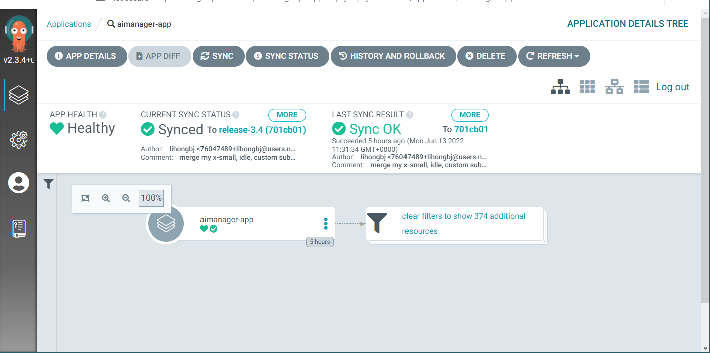
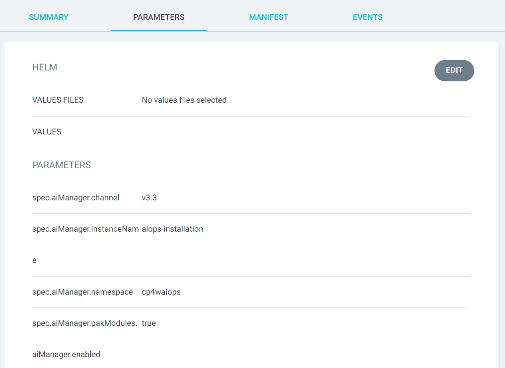

Table of Contents generated with DocToc
- Upgrade CP4WAIOps From Previous Version using GitOps
- Prerequisite
- Upgrade CP4WAIOps from UI
- Upgrade CP4WAIOps from Command Line
- Verify Upgrade Result
Upgrade CP4WAIOps From Previous Version using GitOps¶
Prerequisite¶
- To learn CP4WAIOps system requirement, please refer to System requirements for Cloud Pak for Watson AIOps.
- The upgrade method here is suitable for CP4WAIOps previous installed using gitops.
Upgrade CP4WAIOps from UI¶
Login to Argo CD¶
You can now login to Argo CD UI as follows by clicking the drop down menu on top right.

Argo CD UI will be popped up and you can login using LOG IN VIA OPENSHIFT.

Upgrade AI Manager from Application Dashboard¶
- Click on the AI Manager application
aimanager-app - Click on the
APP DETAILSbutton on the top of the screen:  - Select
PARAMETERStab - Click on
EDIT - Update the "spec.aiManager.channel" value to
v3.4 - Click on
SAVE
Upgrade CP4WAIOps from Command Line¶
Login to Argo CD (Cli)¶
Make sure you have installed Argo CD CLI, i.e.: the argocd command, then run following commands to login to Argo CD:
argo_route=openshift-gitops-server
argo_secret=openshift-gitops-cluster
sa_account=openshift-gitops-argocd-application-controller
argo_pwd=$(kubectl get secret ${argo_secret} \
-n openshift-gitops \
-o jsonpath='{.data.admin\.password}' | base64 -d ; echo ) \
&& argo_url=$(kubectl get route ${argo_route} \
-n openshift-gitops \
-o jsonpath='{.spec.host}') \
&& argocd login "${argo_url}" \
--username admin \
--password "${argo_pwd}" \
--insecure
Verify Argo CD (Cli)¶
argocd app list
The output should shows the previous installed CP4WAIOps version.
NAME CLUSTER NAMESPACE PROJECT STATUS HEALTH SYNCPOLICY CONDITIONS REPO PATH TARGET
aimanager-app https://kubernetes.default.svc cp4waiops default Synced Healthy Auto <none> https://github.com/IBM/cp4waiops-gitops config/cp4waiops/install-aimgr release-3.3
ceph https://kubernetes.default.svc rook-ceph default Synced Healthy Auto <none> https://github.com/IBM/cp4waiops-gitops config/ceph release-3.3
cp-shared https://kubernetes.default.svc openshift-marketplace default Synced Healthy Auto <none> https://github.com/IBM/cp4waiops-gitops config/cp-shared/operators release-3.3
The results may not contains application cp-shared, no need to worry about it.
Upgrade AI Manager (Cli)¶
argocd app set aimanager-app -p spec.aiManager.channel=v3.4
argocd app sync aimanager-app
Verify Upgrade Result¶
The upgrade process will take a while, it will largely depends on the network performance.
After upgrade completed, all pod should be in running status and ready.
Use command line to check CSV details.
oc get csv -n cp4waiops
The output should be looking like below:
NAME DISPLAY VERSION REPLACES PHASE
aimanager-operator.v3.4.0 IBM Watson AIOps AI Manager 3.4.0 aimanager-operator.v3.3.2 Succeeded
aiopsedge-operator.v3.4.0 IBM Watson AIOps Edge 3.4.0 aiopsedge-operator.v3.3.2 Succeeded
asm-operator.v3.4.0 IBM Netcool Agile Service Manager 3.4.0 asm-operator.v3.3.2 Succeeded
couchdb-operator.v2.2.1 Operator for Apache CouchDB 2.2.1 couchdb-operator.v2.2.0 Succeeded
ibm-aiops-ir-ai.v3.4.0 IBM Watson AIOps Issue Resolution AI & Analytics 3.4.0 ibm-aiops-ir-ai.v3.3.2 Succeeded
ibm-aiops-ir-core.v3.4.0 IBM Watson AIOps Issue Resolution Core 3.4.0 ibm-aiops-ir-core.v3.3.2 Succeeded
ibm-aiops-ir-lifecycle.v3.4.0 IBM Cloud Pak for Watson AIOps Lifecycle 3.4.0 ibm-aiops-ir-lifecycle.v3.3.2 Succeeded
ibm-aiops-orchestrator.v3.4.0 IBM Cloud Pak for Watson AIOps AI Manager 3.4.0 ibm-aiops-orchestrator.v3.3.2 Succeeded
ibm-automation-core.v1.3.7 IBM Automation Foundation Core 1.3.7 ibm-automation-core.v1.3.6 Succeeded
ibm-automation-elastic.v1.3.6 IBM Elastic 1.3.6 ibm-automation-elastic.v1.3.5 Succeeded
ibm-automation-eventprocessing.v1.3.7 IBM Automation Foundation Event Processing 1.3.7 ibm-automation-eventprocessing.v1.3.6 Succeeded
ibm-automation-flink.v1.3.6 IBM Automation Foundation Flink 1.3.6 ibm-automation-flink.v1.3.5 Succeeded
ibm-automation.v1.3.7 IBM Automation Foundation 1.3.7 ibm-automation.v1.3.6 Succeeded
ibm-cloud-databases-redis.v1.4.3 IBM Operator for Redis 1.4.3 ibm-cloud-databases-redis.v1.4.2 Succeeded
ibm-common-service-operator.v3.18.0 IBM Cloud Pak foundational services 3.18.0 ibm-common-service-operator.v3.17.0 Succeeded
ibm-management-kong.v3.4.0 IBM Internal - IBM Watson AIOps Kong 3.4.0 ibm-management-kong.v3.3.2 Succeeded
ibm-postgreservice-operator.v3.4.0 IBM Postgreservice 3.4.0 ibm-postgreservice-operator.v3.3.2 Succeeded
ibm-secure-tunnel-operator.v3.4.0 IBM Secure Tunnel 3.4.0 ibm-secure-tunnel-operator.v3.3.2 Succeeded
ibm-vault-operator.v3.4.0 IBM Vault Operator 3.4.0 ibm-vault-operator.v3.3.2 Succeeded
ibm-watson-aiops-ui-operator.v3.4.0 IBM Watson AIOps UI 3.4.0 ibm-watson-aiops-ui-operator.v3.3.2 Succeeded
openshift-gitops-operator.v1.5.2 Red Hat OpenShift GitOps 1.5.2 Succeeded
The output should be showing the new version 3.4.x for components below: - IBM Watson AIOps AI Manager - IBM Watson AIOps Edge - IBM Netcool Agile Service Manager - IBM Watson AIOps Issue Resolution AI & Analytics - IBM Watson AIOps Issue Resolution Core - IBM Cloud Pak for Watson AIOps Lifecycle - IBM Cloud Pak for Watson AIOps AI Manager - IBM Internal - IBM Watson AIOps Kong - IBM Postgreservice - IBM Secure Tunnel - IBM Vault Operator - IBM Watson AIOps UI